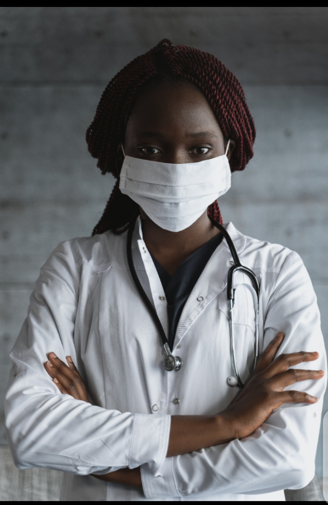
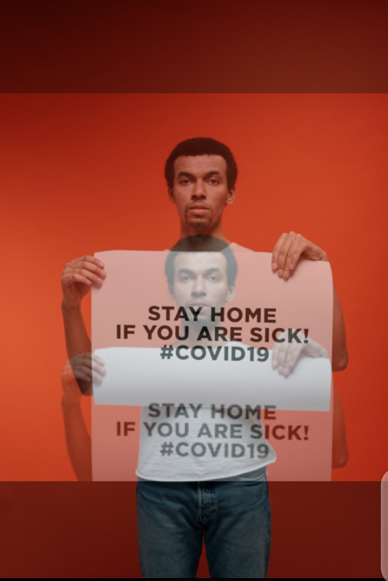

Helping Hands is a non-profit organization dedicated to serving those most at-risk to COVID-19:
senior citizens, the immune compromised, and people with pre-existing medical conditions which
put them at additional risk.
Our community volunteers and delivery partners deliver groceries, medicine, and other necessary
supplies to empower everyone to stay healthy and be as responsible as they can be.

Helping Hands Community connects those who must shelter in place with our
volunteers and delivery partners so groceries, medication and essential
supplies get delivered safely. Our technology platform makes community
volunteerism easy and reliable while providing an intuitive solution for
partners to scale their own impact.
Our partner solutions allow organizations to fulfill custom and batch requests
at scale through the Helping Hands Community platform, while we connect
individuals who need help and can offer help through our website.
LEMME HELp
About Us
Mission
Our mission is to serve individuals at risk for COVID-19 and food insecurity, using technology to
empower community organizations and local volunteers to deliver the essential supplies to those in
need.
How we help
Lemme Help connects those who must shelter in place with our volunteers and delivery partners so
groceries, medication and essential supplies get delivered safely. Our technology platform makes
community volunteerism easy and reliable while providing an intuitive
solution for partners to scale their own impact.
Our partner solutions allow organizations to fulfill custom and batch
requests at scale through the Lemme Help platform, while we connect
individuals who need help and can offer help through our website.
Our partnerships with organizations like Wider Circle, Optum, Second
Harvest, Uber and others have allowed us to help bridge volunteer
shortages and solve the challenge of last mile delivery at scale. We've
grown the number of people we can help by working together—and we
are always open to new partners who want to contribute to our mission.
Join our team
Founded by veterans of Uber, Facebook, and Google, as well as students beginning their careers, the
Lemme Help organization comprises more than 150 volunteers around the country who want to give
back. Together, we make local volunteerism easy and reliable for our partners and help to
national spread of COVID-19.
Follow the guidelines to help protect yourself from contracting and transmitting SARS-CoV-2.
1. Wash your hands frequently and carefully
Use warm water and soap and rub your hands for at least 20 seconds. Work the lather to your wrists,
between your fingers, and under your fingernails. You can also use an antibacterial and antiviral soap.
Use hand sanitizer when you cannot wash your hands properly. Rewash your hands several times a day,
especially after touching anything, including your phone or laptop.
2. Avoid touching your face
SARS-CoV-2 can live on some surfaces for up to 72 hours. You can get the virus on your hands if you
touch a surface like:
o gas pump handle
o your cell phone
o a doorknob
Avoid touching any part of your face or head, including your mouth, nose, and eyes. Also avoid biting
your fingernails. This can give SARS-CoV-2 a chance to go from your hands into your body.
3. Stop shaking hands and hugging people — for now
Similarly, avoid touching other people. Skin-to-skin contact can transmit SARS-CoV-2 from one person
to another.
4. Don’t share personal items
Do not share personal items like:
phones
makeup
combs
It’s also important not to share eating utensils and straws. Teach children to recognize their reusable
cup, straw, and other dishes for their own use only.
5. Cover your mouth and nose when you cough and sneeze
SARS-CoV-2 is found in high amounts in the nose and mouth. This means it can be carried by air
droplets to other people when you cough, sneeze, or talk. It can also land on hard surfaces and stay there
for up to 3 days.
Use a tissue or sneeze into your elbow to keep your hands as clean as possible. Wash your hands
carefully after you sneeze or cough, regardless.
6. Clean and disinfect surfaces
Use alcohol-based disinfectants to clean hard surfaces in your home like:
countertops
door handles
furniture
toys
Also, clean your phone, laptop, and anything else you use regularly several times a day.
Disinfect areas after you bring groceries or packages into your home.
Use white vinegar or hydrogen peroxide solutions for general cleaning in between disinfecting surfaces.
7. Take physical (social) distancing seriously
If you’re carrying the SARS-CoV-2 virus, it’ll be found in high amounts in your spit (sputum). This can
happen even if you don’t have symptoms.
Physical (social) distancing, also means staying home and working remotely when possible.
If you must go out for necessities, keep a distance of 6 feet (2 m) from other people. You can transmit
the virus by speaking to someone in close contact to you.
8. Do not gather in groups
Being in a group or gathering makes it more likely that you’ll be in close contact with someone.
This includes avoiding all religious places of worship, as you may have to sit or stand too close to
another congregant. It also includes not congregating at parks or beaches.
9. Avoid eating or drinking in public places
Now is not the time to go out to eat. This means avoiding restaurants, coffee shops, bars, and other
eateries.
The virus can be transmitted through food, utensils, dishes, and cups. It may also be temporarily
airborne from other people in the venue.
You can still get delivery or takeaway food. Choose foods that are thoroughly cooked and can be
reheated.
High heat (at least 132°F/56°C, according to one recent, not-yet-peer-reviewed lab study) helps to kill
coronaviruses.
This means it may be best to avoid cold foods from restaurants and all food from buffets and open salad
bars.
10. Wash fresh groceries
Wash all produce under running water before eating or preparing.
The CDC Trusted Source and the FDA Trusted Source do not recommend using soap, detergent, or
commercial produce wash on things like fruits and vegetables. Be sure to wash hands before and after
handling these items.
11. Wear a (homemade) mask
The Centers for Disease Control and Prevention (CDC) recommends Trusted Source that almost
everyone wears a cloth face mask in public settings where physical distancing may be difficult, such as
grocery stores.
When used correctly, these masks can help prevent people who are asymptomatic or undiagnosed from
transmitting SARS-CoV-2 when they breathe, talk, sneeze, or cough. This, in turn, slows the
transmission of the virus.
The CDC’s website provides instructions Trusted Source for making your own mask at home, using
basic materials such as a T-shirt and scissors.
Some pointers to keep in mind:
o Wearing a mask alone will not prevent you from getting a SARS-CoV-2 infection. Careful hand
washing and physical distancing must also be followed.
o Cloth masks aren’t as effective as other types of masks, such as surgical masks or N95
respirators. However, these other masks should be reserved for healthcare workers and first
responders.
o Wash your hands before you put on your mask.
o Wash your mask after each use.
o You can transfer the virus from your hands to the mask. If you’re wearing a mask, avoid
touching the front of it.
o You can also transfer the virus from the mask to your hands. Wash your hands if you touch the
front of the mask.
o A mask shouldn’t be worn by a child under 2 years old, a person who has trouble breathing, or a
person who can’t remove the mask on their own.
12. Self-quarantine if sick
Call your doctor if you have any symptoms. Stay home until you recover. Avoid sitting, sleeping, or
eating with your loved ones even if you live in the same home.
Wear a mask and wash your hands as much as possible. If you need urgent medical care, wear a mask
and let them know you may have COVID-19.